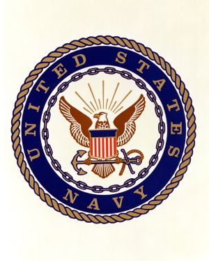
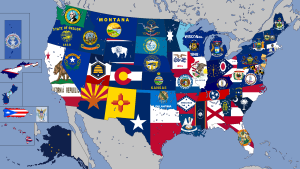

Navy

My dad was a part of the US Navy up until I was born. My family had to move many times because of it. We even traveled to England for a while!

My dad was a part of the US Navy up until I was born. My family had to move many times because of it. We even traveled to England for a while!
My dad took many photos in London which were hung up in our house. We lived in Warboys for the short time that we were there. I don't remember much of it since I was a baby.

All of my family was born in different parts of the United States. All the way from West Virginia to Kentucky to Indiana. We even own a mini flag circle with each of our flags.